A photo essay is a powerful form of visual storytelling that uses a series of images to convey ideas, emotions, and narratives about real life. Rooted in the traditions of documentary and street photography, it goes beyond simply capturing moments it interprets the human condition through observation, timing, and composition.
The purpose of this assignment was to explore how people interact, move, and communicate in public spaces, using the camera as a tool for observation and storytelling. Students were encouraged to capture candid moments while paying close attention to light, composition, and timing.
Downtown Kingston, with its vibrant mix of street vendors and rich street culture, serves as a dynamic backdrop where themes such as human connection, social contrast, and daily routines come to life visually. This assignment challenges photographers to develop key skills in awareness, patience, and creative interpretationseeing beyond the obvious to find meaning in the ordinary.
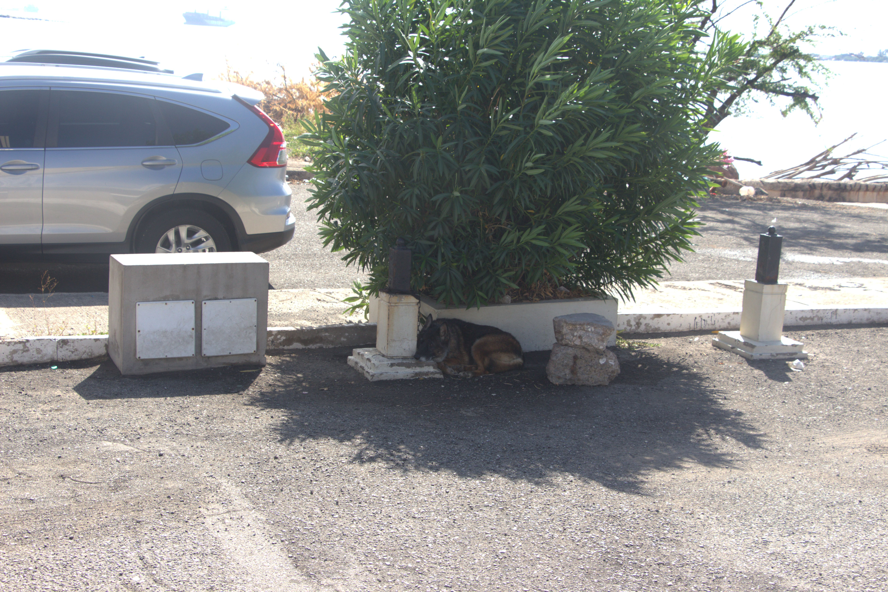
A guard dog seeks shade beneath a parking lot tree on sunny day, Feb 24, 2026.
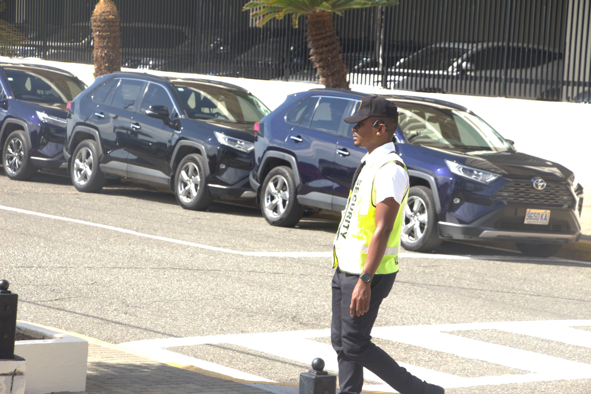
A security guard partoling the Bank Of Jamaica parking lot in his high visibilty vest, Feb 24,2026.
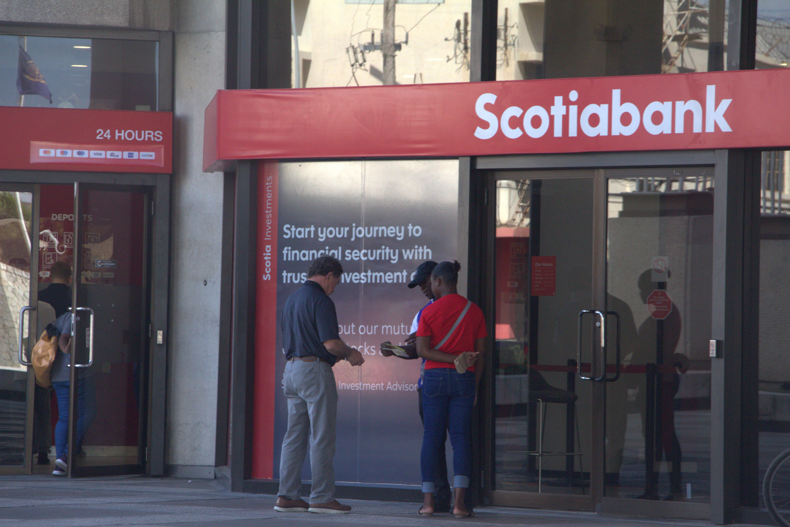
A security guard assists customers outside Scotiabank branch on Duke street,Feb 24,2026.
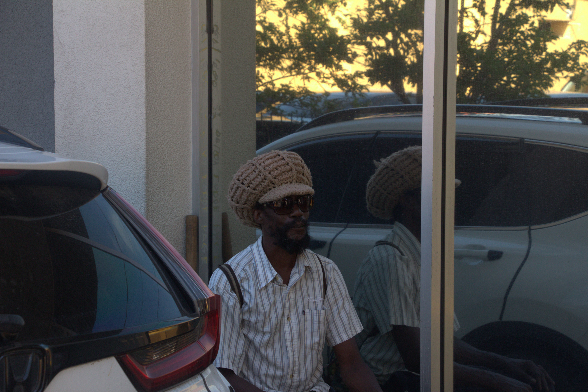
Profit sits among parked vehicles in downtown Kingston, Feb 24, 2026.
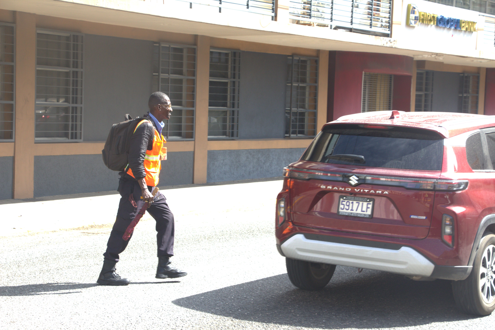
A worker in a high visibilty vest strides cross the Harbour street downtown, Feb 24,2026.
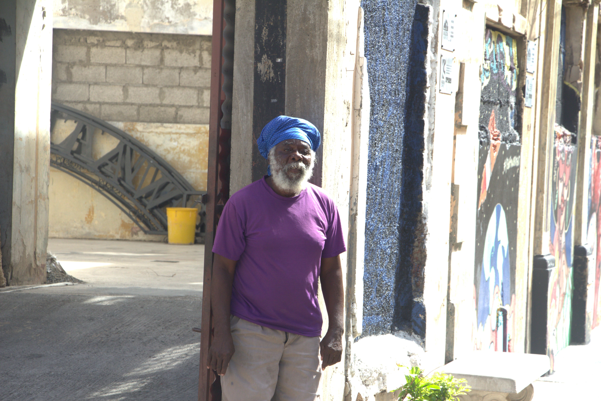
Fyah a beared elder man in a blue turban poses against the worn walls of downtown Kingston building, Feb24,2026.
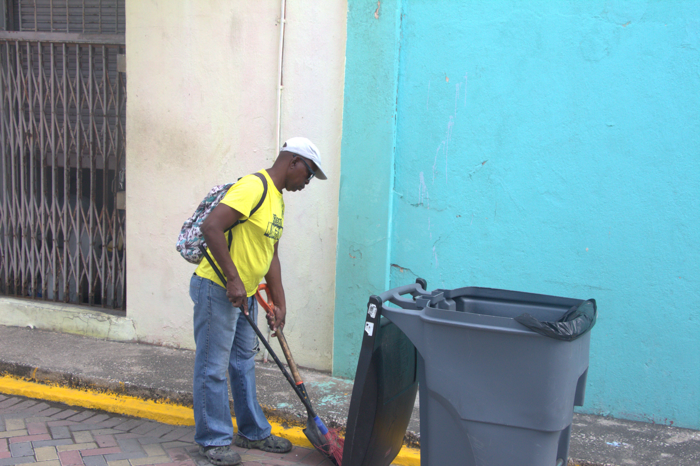
A street cleaner sweeps the sidewalks along a downtown Kingston street,Feb 24,2026.
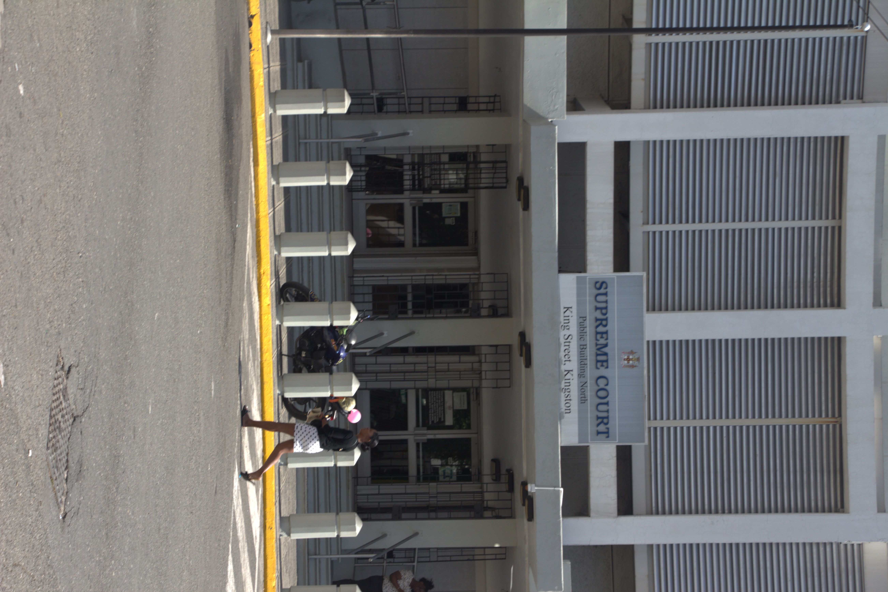
A pedestrian crosses in front of the Supreme Court on King Street,Kingston,Feb 24,2026.
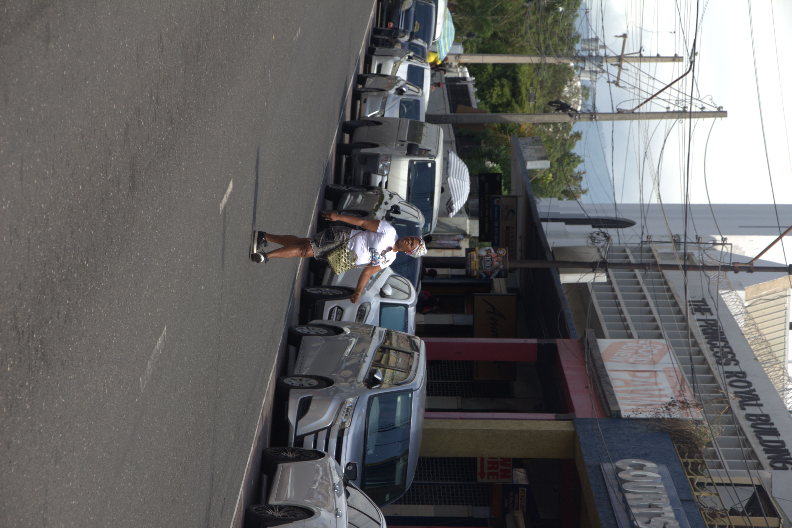
Pauline crosses road looking right for the incoming traffic downtown Kingston,Feb 24,2026.
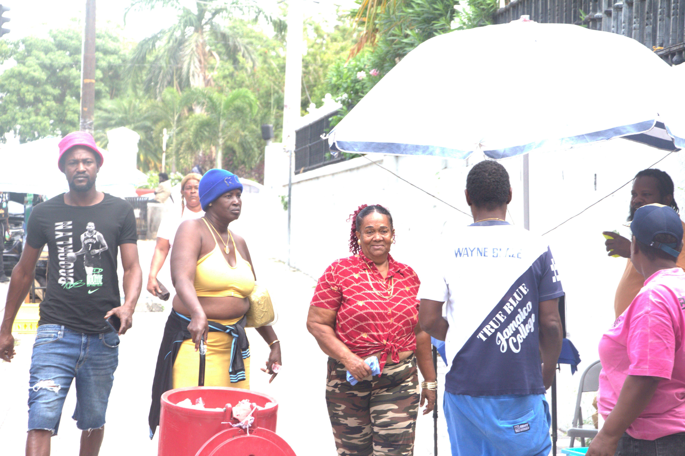
A street vendor pushes an igloo filled with drinks through Downtown kingston, Feb 24,2026
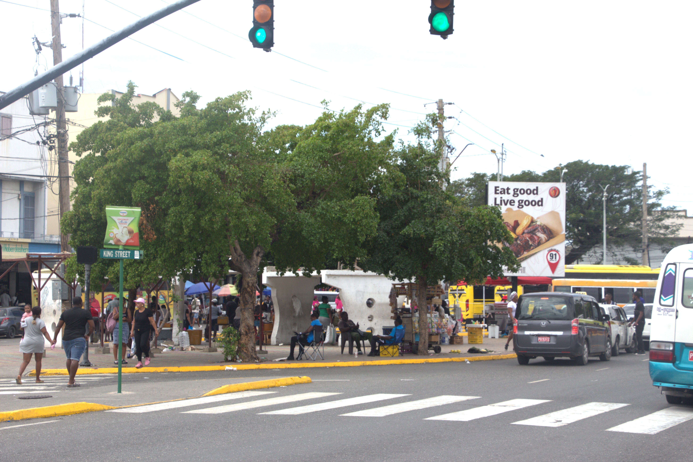
The busling intersection of King Street in downtown Kingston, as vendors,pesdestrians and traffic fill the streets,Feb 24,2026.
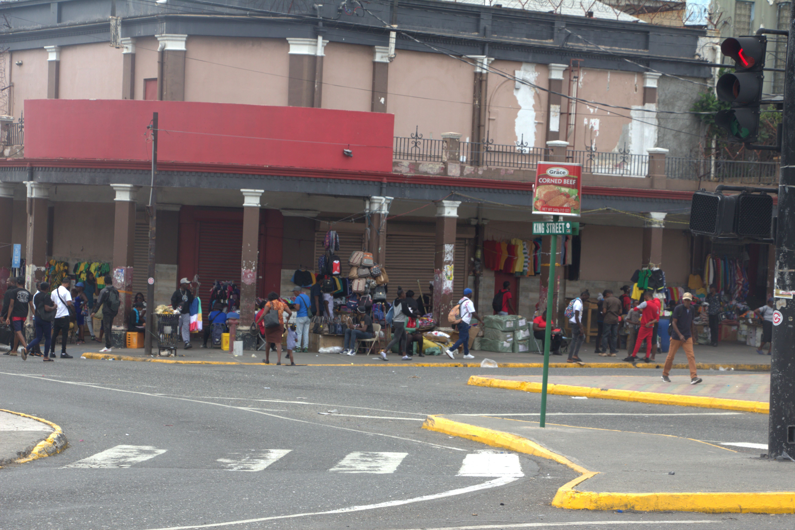
Street vendors line the sidewalks along King street downtown Kingston, as shoppers browse goods,Feb 24,2026.
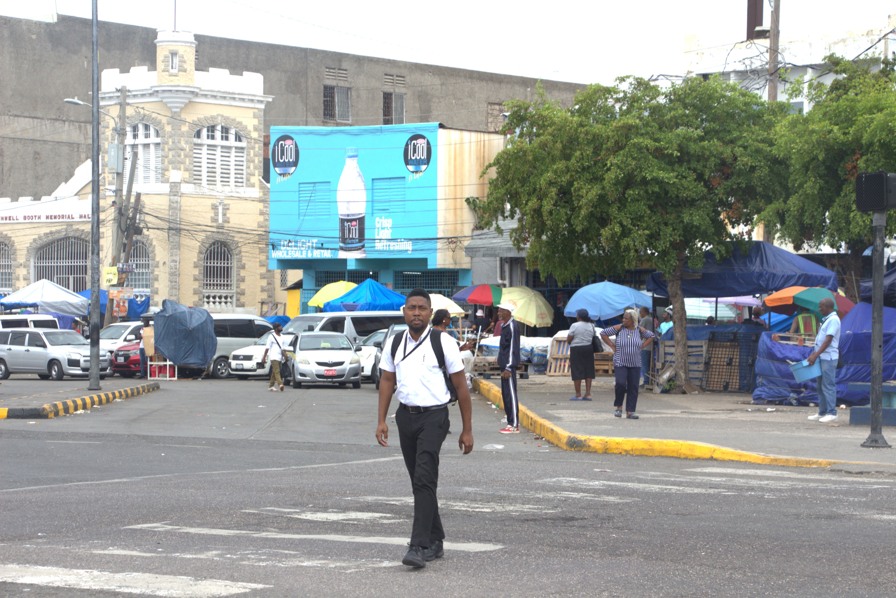
A man using the pedestrian cross at North Parade with the historic Rowell Booth Memorial Hall amd bustling market in the background,Feb 24,2026.
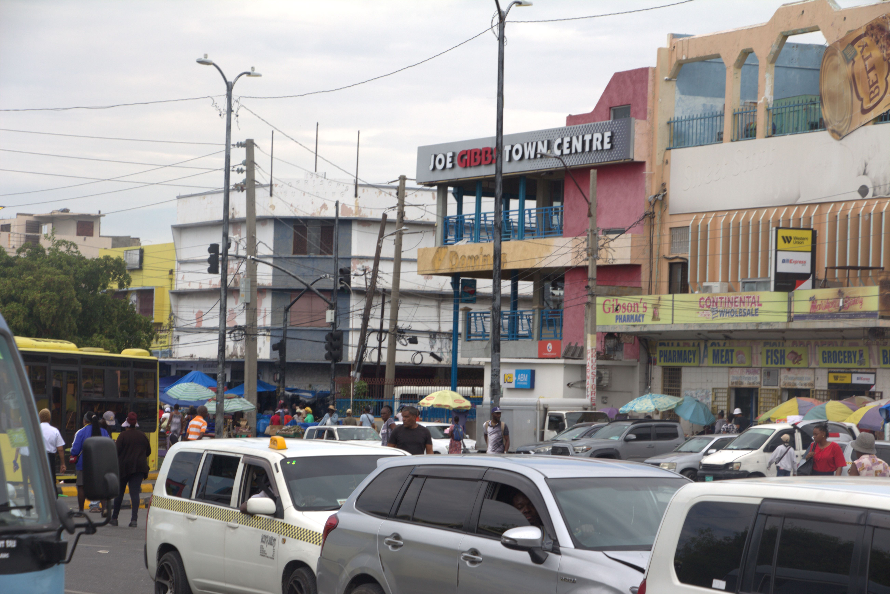
Heavy traff and crowds converge near Joe Gibbs Town Centre in downtown Kingston,Feb24,2026.
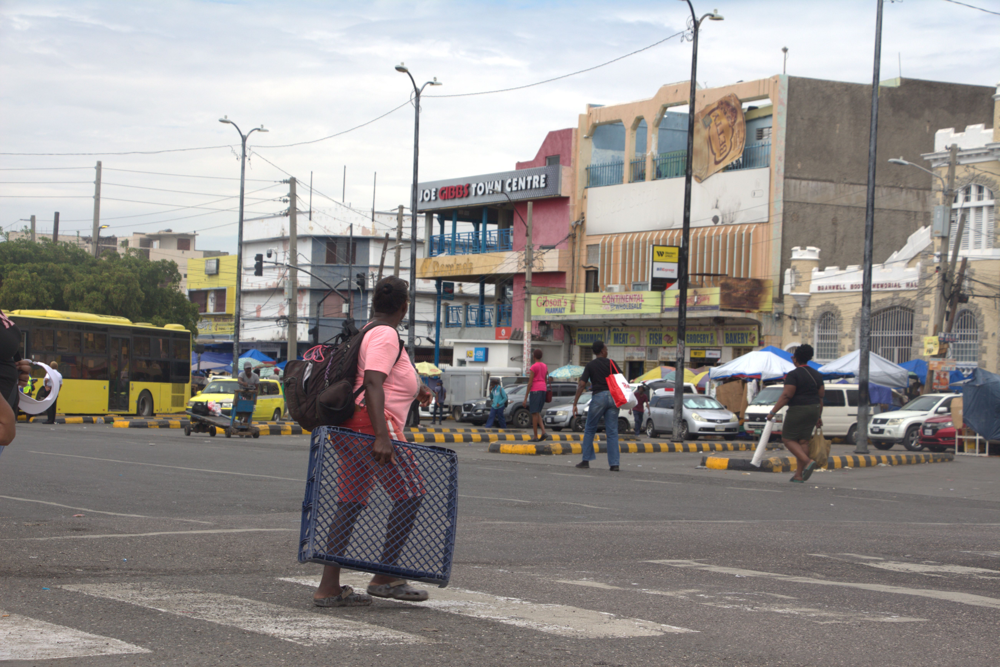
A woman crosses the road at North Parade Kingston carrying a crate and backpack,Feb 24,2026.